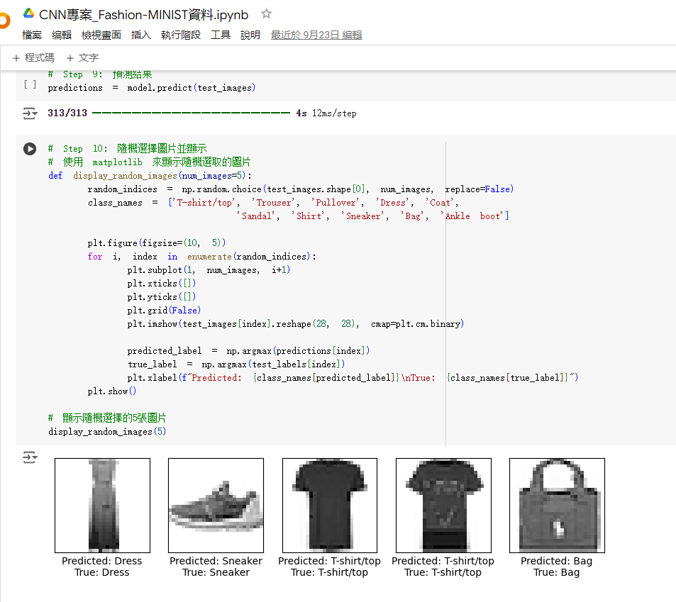
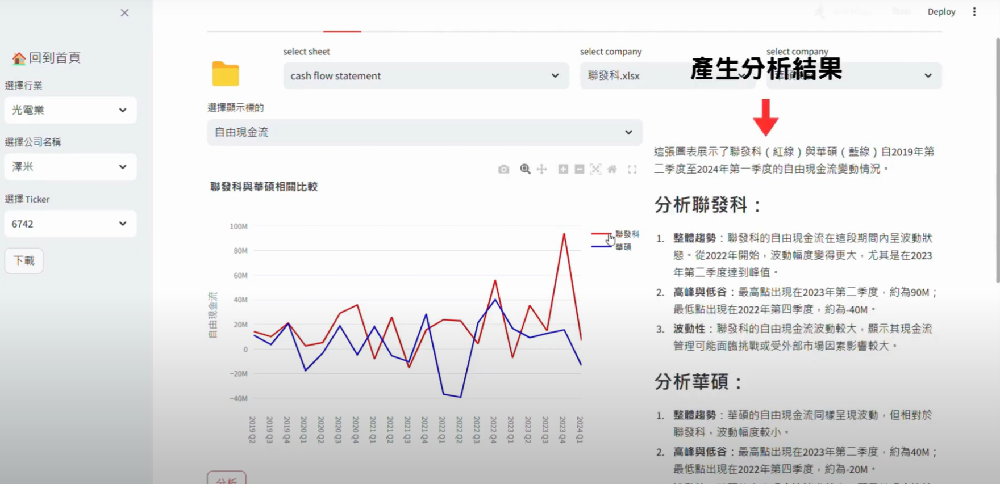
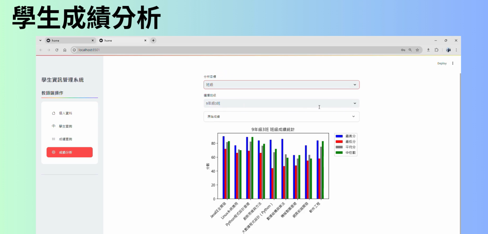
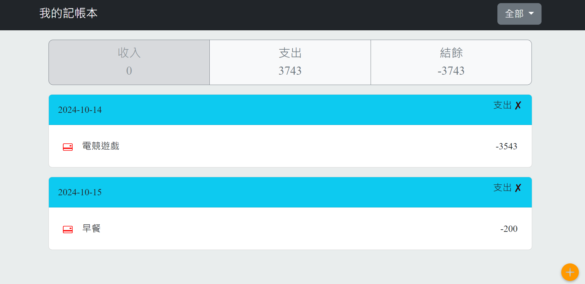

我是軟體工程師，專注於各類型的資料處理、AI技術、資料數據化等領域。
你好!我是蘇世界!我是中央大學資訊管理碩士班畢業的學生，對於解決複雜問題充滿熱情，特別是在AI、機器學習和大語言模型這些領域。熟悉 HTML、CSS、JavaScript 和各種框架，並且善於將數據與視覺效果結合，以提供更好的用戶體驗。我也對機器學習和深度學習領域充滿熱情，經常將這些技術應用於專案中。
熟習CNN、RNNs和強化學習等架構使用，並應用於圖像識別、情緒分析等專案。

熟習大語言模型的框架，實現語音對話、知識管理、報表分析等功能的小型專案。

實現連結後端數據庫，進行即時數據查詢，視覺化呈現。

熟悉javascrip、Html和Css等語法，應用記帳簿、個人網站等專案
